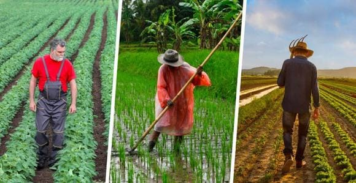

Agriculture
Agriculture was a major activity of primitive people alongside hunting, once they discovered fire and realized that grains tasted better when cooked. Even though there are disputes to advocate carnivores stating that meat contains all necessary nutrients for humans, the total absence of crops would have a dubious benefit for mankind. There are at least three significant reasons for that:
- For foodies, various types of crops provide abundant gastronomic diversity.
- For meat-eaters, forage species support cattle or livestock farming needs.
- For vegetarians, plants are the key source of nutrition, so the more types they consume, the more different nutrients they get.
Thus, harvesting versatile species is an important business for agrarians. A variety of sorts and crop rotation are efficient agricultural strategies. They allow farmers to boost yields supplying soils with nutrients with minimum fertilizer applications.
In this regard, satellite field monitoring and online software with data interpretation like Crop Monitoring proved to be of great use. In particular, retrospective analysis shows historically efficient types of crop for a specific area while precise application of fertilizers, recommended crop rotation and field zoning aid in saving input costs.
Basic classifications of crops – what makes the difference
The development of agriculture and industry involved a vaster usage of plants than just for eating or feeding domestic animals. Furthermore, when mankind satisfied its primary needs in food and industrial products, it started thinking about the aesthetic side as well. Thus, various plants were used in home décor and landscape design.

There are several classifications of crops depending on what is taken to determine the ambiguity:
- Season of sowing (spring or fall).
- Origin of plants (local or foreign).
- Purpose of growing. This classification falls into six basic groups:
- Food crops – for human needs (e.g. wheat, maize, legumes, rice, potatoes, tomatoes).
- Feed crops – for cattle or livestock consumption (e.g. barley, beets, grasses for domestic animals to graze and store as hay or silage).
- Fiber crops – for the sake of fibers used in clothes, bedding, industry, and household (hemp, cotton, flax, bamboo).
- Oil crops – for oil manufacturing either for machinery fuel (rape) or food industry (sunflower, olives).
- Ornamental crops – for home decoration and landscape design (garden or pot flowers and bushes).
- Industrial crops – for industrial manufacturing (rubber).
The described classification of crops doesn’t embrace crop types strictly, meaning that if one plant belongs to one category, it can’t belong to another. The exceptions probably make only the two last groups, when industrial rubber can’t be used for food and garden flowers are often beautiful but poisonous.
In the rest of the cases, the groups are interchangeable. Thus, wheat and oats can be used both as food and feed crops, depending on their quality. Flax seeds are a useful dietary supplement while its fibers are utilized in textiles. Sugarcane is the source of edible sugar and alcohol for bioethanol.
A few words should be mentioned here about GMO foods as a specific genetically engineered crop type. They are less subject to diseases, more productive and require less fertilizing. However, it is doubtful if they really do much good for people, while the advantage of organic farming for human health can’t be denied.
Technologies of crop growing and harvesting: diversity of attitudes

Various approaches in agriculture developed thousands of years ago even without a scientific background. People noticed that planting either tops or roots in turns prevents soil erosion.
Some types of crops like sunflower or rape devastate soil and require a fallow year. Certain sequences of plants promote yields. For example, cabbage grows faster when following legumes. It was discovered later that this is because legumes convert nitrogen from the atmosphere into ammonium nitrogen and release it to the soil.
These observations gave rise to alternative types of cropping system when either crop rotation or monocropping was employed. Correspondingly, either different or same species are grown year by year.
There is yet another option for that, known as intercropping when several mutually beneficial and ‘friendly’ species are sown on the field at the same time, for example, wheat, corn, and soybeans together six rows each.
There also exists another approach to the classification of the types of crop cultivation.
- Arable system grows field crops without animals.
- Pastoral or livestock farming uses the territories as pastures only.
- Nomadic one is similar to pastoral but animals are moved with herdsmen for abundant graze and freshwater.
- Mixed system suggests raising livestock and growing plants at the same land simultaneously.
- Plantation system involves raising certain species on plantations like tea, spices, coffee, etc.
- Subsistence agriculture supports the individual needs of farmers and their families.
- Shifting system abandon lands for a certain period of time when they lose fertility to explore other territories. This approach does not add to sustainability, however.
Other circumstances determining agricultural productivity
Fields may contain soils varying in composition and draining properties, so it makes sense to sow different types of crop there.
In historical retrospective, some crops give better yields than others in specific areas. Weather forecasts allow agrarians to save on irrigation with coming rains, or protect the seedlings from sudden hail or frost.
Fertilizers target more precisely when the stages of plant development are tracked with satellite monitoring that points out the problem areas. Pest control becomes a less serious issue when noticed on time.